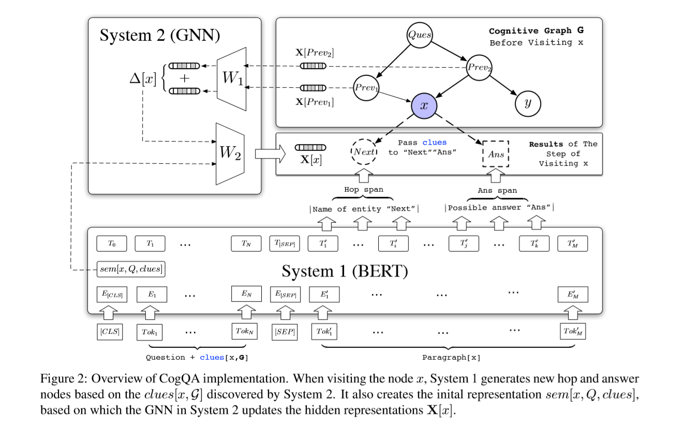

Note of CG4MulRCaS
本文最后更新于：2022年7月13日 中午
本文是 ACL 2019 Cognitive Graph for Multi-Hop Reading Comprehension at Scale 的阅读笔记，说是笔记，应该会大量翻译原文的内容。为了强迫自己把某些不知道什么原因每次看到一半就不想看了以至于需要重新看的论文看完，会简单写一个笔记。
顺带一提，本文中的脚注会按照原论文进行编号。为加以区别，我自己的脚注会从 51 开始编号。
Author & Abstract
Author: MingDing, ChangZhou, QibinChen ,HongxiaYang, JieTang
Department of Computer Science and Technology, Tsinghua University
DAMO Academy, Alibaba Group
Link: arXiv: 1905.05460
我们在互联网规模的文档的多跳问答 (Multi-hop question answering) 方面，提出了一个新的 CogQA 框架。基于认知科学的双过程理论，该框架在隐含抽取模块 (System 1) 和具体抽取模块 (System 2) 的相互作用的迭代过程中，逐渐建立一个 认知图 。除了提供准确的答案，我们的框架进一步提供可解释的推理路线。具体的说，我们的实现[1]基于 BERT 和 图神经网络 (GNN) 有效地解决了在 HotpotQA 全维基数据集中，百万计的多跳推理问题，获得了排行榜中最高的联合 $F_1$ 分数：34.9，最高竞争者的分数是23.6。[2]
1 Introduction
这里就写一些要点了 = = 全篇翻译可能也没有太大用处。
- 在单文章的问答方面，深度学习模型取得了超过人类水平的成绩。
- 但我们还面临以下三大挑战：推理能力、可解释性、可扩展性
- 推理能力：多跳问答
- 可解释性：HotpotQA 要求 无序、句子级别 的可解释性，而人类可以做到有序、实体级别 的可解释性
- 可扩展性：与人类通过大容量内存中的知识进行推理的能力相比，该框架是单段问题解答和可伸缩信息检索之间的简单折衷。（长难句翻译？）
- 参考人类的认知过程：双过程理论 ，构建两个系统。
- 我们构建的 CogQA 也分为两个系统：
- System 1 在多个段落中抽取与问题相关的实体与候选答案，并对其语义信息进行编码。
- System 2 对实体图进行推理，收集线索并指导 System 1 更好地提取下一跳的实体。
- 两系统迭代工作，直到所有的可能答案被发现。
2 Cognitive Graph QA Framework
这里加上那个算法有点没看懂，所以就翻译全文了。
（u1s1，谷歌翻译得比我好多了。）
（u2s2， 伪代码是什么鬼语言 = =）
人类的推理能力严格依靠信息的关系结构。我们直观地采用有向图结构，在多条问答的认知过程中一步步的推理和探索。在我们的阅读理解设置中，认知图 $\mathcal{G}$ 的每一个节点与一个实体或一个可能的答案 $x$ 相关，也可以互换的表示成节点 $x$[51]。 抽取模块 System 1 阅读实体 $x$ 的介绍性段落 $\mathrm{para}[x]$ 并在段落中抽取 候选答案 与有用的 下一跳实体 。 然后，用这些新节点扩展 $\mathcal{G}$ ，为推理模块 System 2 提供显式结构。在这篇文章中，我们假设 System 2 由通过计算节点的隐状态 $\boldsymbol{\mathrm{X}}$ 基于深度学习的学习，而不是基于规则的推理。因此 System 1 也需要在抽取文本片段时，将 $\mathrm{para}[x]$ 归纳成语法向量作为初始隐状态。然后 System 2 基于图结构更新 $\boldsymbol{\mathrm{X}}$ ，作为下游预测的推理结果。
由于认知图中有明确的推理路径，因此具有可解释性。[52] 不仅对于简单的路径，认知图也可以清楚地显示联合或循环的推理过程，其中新的前节点可能带来关于答案的新的 $\mathrm{clues}$。 在我们的框架中，$\mathrm{clues}$ 是一个形式灵活的概念，它指的是来自前节点的信息，用来指导 System 1 更好的抽取文本片段。除了新增加的节点，由于有新的线索，那些具有新的入边的节点也需要重新访问。我们把它们都称作 前节点。
可扩展性意味着问答的时间消耗不会随着文章数量的增加显著地增长。我们的框架可以自然地缩放，因为唯一参照所有文章的操作是通过他们的标题索引获得一些特定的段落。对于多跳的问题，传统的检索抽取框架可能会牺牲[53]后续模型的潜力，因为距离问题跳跃多次的段落可能与该问题共享更少的相同词和更少的语法关系，导致检索失败。然而，在我们的框架中，通过迭代扩展 $\mathrm{clues}$ 可以发现这些文章。
算法 1 描述了我们的框架 CogQA 的流程。在初始化之后，将开始一个图扩展与推理的迭代过程。在每一步我们访问一个前节点 $x$ ，System 1 在 $\mathrm{clues}$ 和问题 $Q$ 的指导下阅读 $\mathrm{para}[x]$ ，抽取文本片段并生成语法向量 $\mathrm{sem}[x, Q, \mathrm{clues}]$。同时，System 2 更新隐状态 $\boldsymbol{\mathrm{X}}$ 并为后节点 $y$ 准备 $\mathrm{clues}[y, \mathcal{G}]$ 。最终预测将基于 $\boldsymbol{\mathrm{X}}$。
1 | |
3 Implementation
这部分主要 算法 + 长难句的谷歌翻译 吧。
- 使用 BERT 作为 System 1
- 使用 GNN 作为 System 2
- $\mathrm{clues}[x, \mathcal{G}]$ 是 $x$ 前节点对应的段落中 抽取出 $x$ 的句子。[54] 并使用原始句子作为 $\mathrm{clues}$ 而不是隐状态。

3.1 System 1
输入模式：
输出模式：
其中 $L$ 是输入序列的长度，$H$是隐状态的维度。
但对于答案节点 $x$ 而言，$\mathrm{para}[x]$可能不存在。因此我们只使用 “Sentence A” 计算 $\mathrm{sem}[x, Q, \mathrm{clues}]$. 之后当我们抽取距离问题一跳的节点初始化 $\mathcal{G}$ 时，我们不计算语义向量，输入中只存在 $\mathrm{Question}$ 部分。[55]
Span Extraction
答案与下一跳实体有不同的属性。答案抽取很大程度上依赖于问题指出的字符。下一跳实体经常是 其描述与问题中的声明 相匹配的实体。因此计算两者的文本片段时，使用不用的可训练参数。
答案文本片段抽取：
为了识别不相关的段落，使用负采样训练 System 1 生成负阈值。在前 $K$ 个文本片段中，起始概率小于负阈值的会被丢弃。这里使用 $\mathrm{P}_{\text{ans}}^{\text{start}}[0]$ 作为阈值。
Semantics Generation
使用第三层到最后一层 0 位置的隐状态作为$\mathrm{sem}[x, Q, \mathrm{clues}]$
3.2 System 2
- Function 1 要为前节点准备 $\mathrm{clues}[x, \mathcal{G}]$ ，这里我们使用提及 $x$ 的原始句子。
Function 2 更新隐状态 $\boldsymbol{\mathrm{X}} \in \mathbb{R}^{n \times H}$。
GNN 更新公式：
其中，$W_1, W_2 \in \mathbb{R}^{H \times H}$ ，$A$ 是图 $\mathcal{G}$ 的邻接矩阵。详情可能需要看这篇论文。Convolutional Neural Networks on Graphs with Fast Localized Spectral Filtering（GCN可能要单独写一篇。）
在实验中，我们观察到这种“异步更新” 与 在 $\mathcal{G}$ 最终确定之后，通过多个步骤一起更新所有节点的 $\boldsymbol{\mathrm{X}}$，性能上没有表现出明显差异，后者实践中更为有效和被采用。（长难句翻译）
3.3 Predictor
- HotpotQA 分三部分：特殊 问题、替代 问题、一般 问题[56]
特殊问题是最普遍的情况。使用两层全连接网络作为预测器 $\mathcal{F}$
替代问题与一般问题d都是比较两个特定实体，给出实体名字或者 yes or no。因此另使用单独的两个全连接网络作为二分类器。
3.4 Training
我们的模型使用负采样监督范式下进行训练。抽取获得文章片段。
3.4.1 Task #1: Span Extraction
损失函数如下定义：
其中，ground truth $\boldsymbol{\mathrm{gt}}_\text{ans}^\text{start}$ 如下定义。
- 对于 answer span $(y, \text{start}, \text{end})$，使用 one hot 即 $\boldsymbol{\mathrm{gt}}_\text{ans}^\text{start}[\mathrm{start}] = 1$ [57]
- 对于 next-hop span，可能有多个 span ，因此概率均匀分布在所有出现的位置上，即$\boldsymbol{\mathrm{gt}}_\text{ans}^\text{start}[\text{start}_i] = 1 / k$
- 对于负跳节点（应该就是不应该连接上的点？）使用$\boldsymbol{\mathrm{gt}}_\text{ans}^\text{start}[0] = 1$
3.4.2 Task #2: Answer Node Prediction
为了推理能力，我们的模型必须学会在实体图中辨别正确答案节点。对于在训练集中的每一个问题，我们对这个任务构造一个训练样例。每一个训练样例是 gold-only graph 和负节点的组合。其中 gold-only graph 是所有正确推理路径的组合。负节点包括在任务一中使用的负跳节点和两个负答案节点。一个负答案节点由一个从随机选择的跳节点中随机抽取的文本片段构成。
对于特殊问题，我们首先对每一个节点计算 最终答案概率 ，通过在 $\mathcal{F}$ 的输出中施加 softmax. 损失 $\mathcal{L}$ 定义为 概率 与 答案 one-hot 向量的交叉熵。
对于替代问题与一般问题，我们用同样的方法使用二进制交叉熵进行优化。这个任务的损失不仅反向传播优化预测器和 System 2，而且 fine-tune System 1 通过 语义向量 $\mathrm{sem} [x, Q, \mathrm{clues}]$
4 Experiment
4.1 Dataset
我们使用 full-wiki setting of HotpotQA 构建我们的实验。 根据 Wikipedia 文档的第一段收集了 112,779 个来自与群众的问题，其中84%需要多跳推理。数据分成了 90564 个问题的训练集，7405 个问题的开发集 和 7405 个问题的测试集。所有在开发集和测试集中的问题都是 困难的多跳 问题。
在训练集中，对于每一个问题，提供一个答案和两个有用实体的段落。并标注出多个支持事实，即包含对推理重要的信息的句子。同时为训练也提供了 8 个没有用的 负段落。在验证中，只提供问题，除答案之外还要给出推理支持事实。
为了在训练中构建认知图，在 gold-only 认知图中的边通过基于 levenshtein 距离的模糊匹配与支持事实相关联。对每一个在 $\mathrm{para}[x]$ 的支持事实，如果任何标记为 $y$ 的 黄金实体 或者 答案，与支持事实中的文本片段模糊匹配，则添加边 $(x,y)$.
4.2 Experimental Details
我们使用预训练的 BERT-base 模型作为 System 1. 隐状态大小 $H$ 为 768， 在 GNN 和 预测器中保持不变。在我们的模型中，所有的激活函数为 $GeLU$。我们在 Task #1 上 训练一个 epoch，然后 将 Task #1 与 Task #2 合并训练一个 epoch。训练超参数如下：
| 模型 | 任务 | 批大小 | 学习率 | 权重消散 |
|---|---|---|---|---|
| BERT | #1,#2 | 10 | $10^{-4}, 4\times10^{-5}$ | 0.01 |
| GNN | #2 | graph | $10^{-4}$ | 0 |
BERT 和 GNN 用两个不同的 Adam 优化器进行优化， $\beta_1 = 0.9, \beta_2 = 0.999$。 预测器与 GNN 共享同一个优化器。BERT 的学习率在前 10% step中进行热身，之后线性消散至0.
为了选出支持事实，我们认为在图中任何节点 $\text{clues}$ 中的句子当作 支持事实。在 $\mathcal{G}$ 的初始化中，这些 1跳文本片段 存在于问题中，并且能通过与在训练集中的支持事实进行模糊匹配被发现。在我们的框架中，被抽取的1跳实体能提高其他模型的 retrieval phase，这促使我们将1跳实体抽取分离开，与其他基于 BERT 的模型，以实现重用。
4.3 Baseline
= =
4.4 Results
使用两种度量：EM 和 F1。联合 EM 当答案字符串和支持事实都严格正确时 为1. 联合准确率与召回率是 答案与支持事实 各自的准确率与召回率的乘积，之后计算联合 F1。这些度量在整个测试集上进行平均。实验结果展示了我们的模型在多方面的优越性。
Overall Performance
- 认知图结构 比 检索抽取更有效
Logical Rigor
Logical Rigor： 逻辑严谨
使用
度量严谨性。
Multi-hop Reasoning
在 替代问题 和 一般问题 中没有进步。
Ablation Studies
- BERT 不是提升的主要因素。
Case Study
反正很强就是了 = =
Something else
零零散散看了好久才看完hhhhhhh，期间帮忙整理了高数和通原的知识点，也希望她能加油吧hhhhh
其实这篇没怎么看懂，部分实现也不是很具体。（可能还需要补充一些其他的知识。。）
- 1.在 https://github.com/THUDM/CogQA 上获取代码 ↩
- 2.https://hotpotqa.github.io 2019年3月4日 ↩
- 51.我觉得这里的 $x$ 即指的是实体，又指的是可能的答案。大概是这两个东西共用了一个符号。 ↩
- 52.via 谷歌翻译 ↩
- 53.sacrifice ↩
- 54.$\mathrm{clues}[x, \mathcal{G}]$ are sentences in paragraphs of $x$'s predecessor nodes, from which $x$ is extracted. ↩
- 55.And when extracting 1-hop nodes from question to initialize $\mathcal{G}$ , we do not calculate semantic vectors and only the $\mathrm{Question}$ part exists in the input. 我也没看懂这句话它想表达什么。 ↩
- 56.我觉得这个翻译不太行。原文： special question, alternative question and general question ↩
- 57.为什么说 answer span 只有一个？莫非是数据集定义的？ ↩